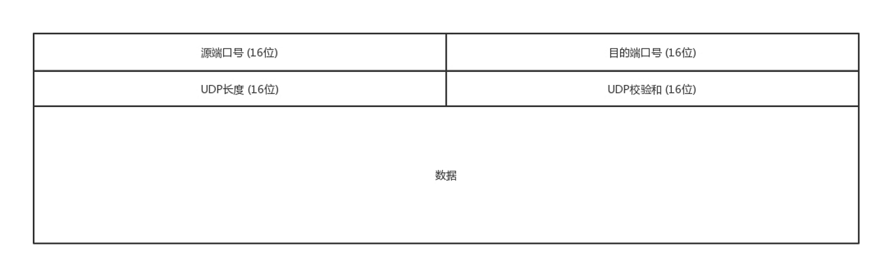
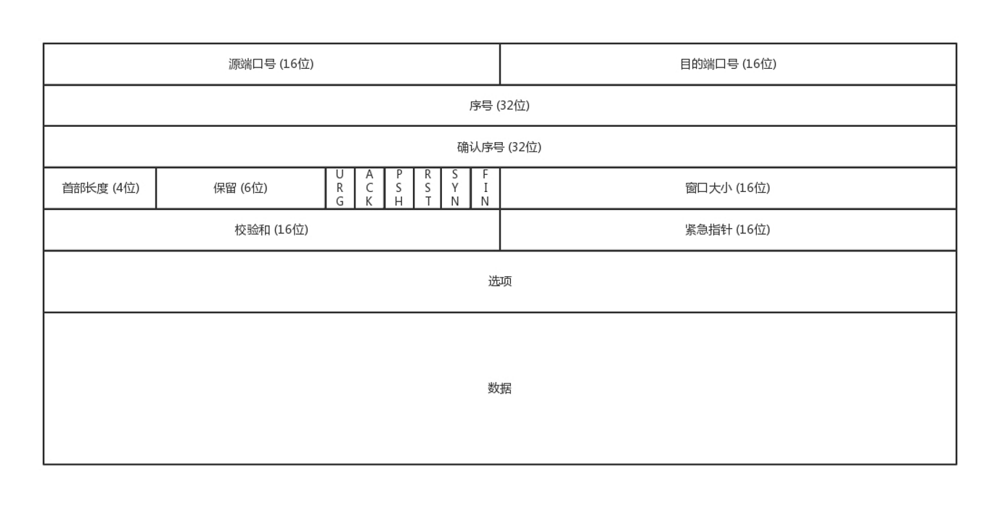
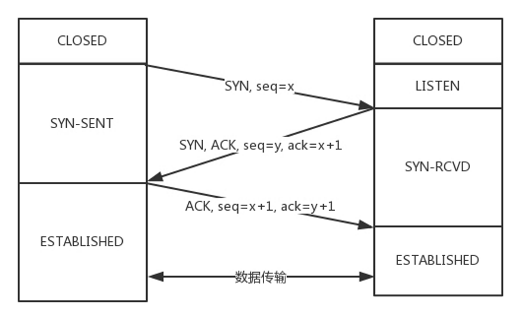
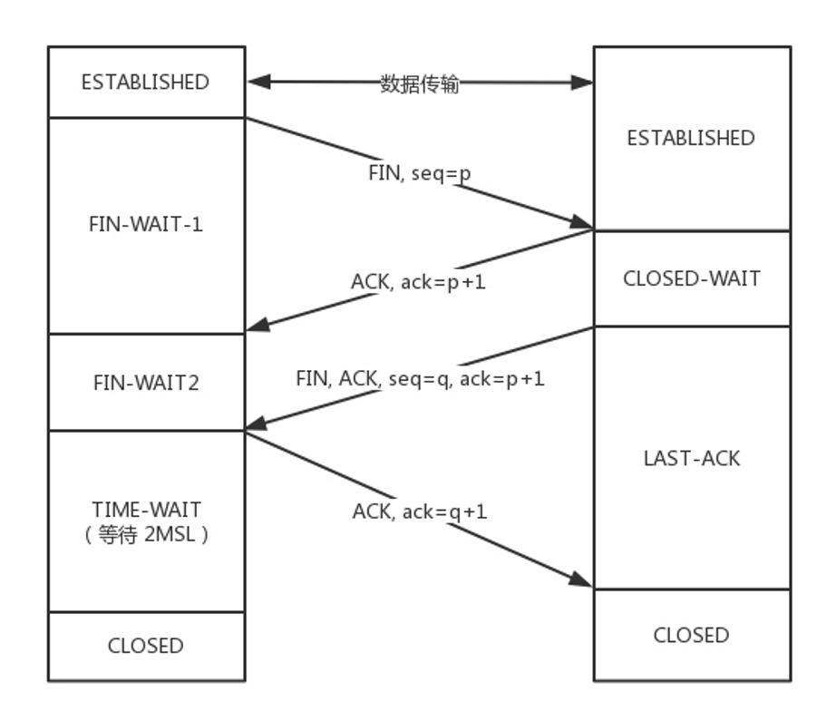
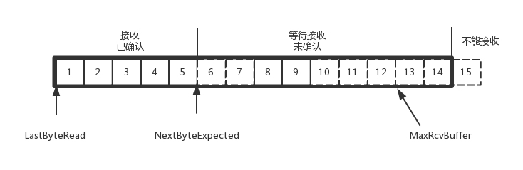

网络第二序章—传输层
传输层：UDP和TCP。
这俩协议真是有太多说的了，毕竟网络里头，TCP/IP协议栈，可太重要了。
TCP与UDP区别
常见的，TCP是面向连接的，UDP是面向无连接的。
在互通之前，面向连接的协议会先建立连接。例如，TCP会三次握手，而UDP不会。
什么是连接呢？
所谓连接，即是两端的状态维护，中间过程没有所谓的连接，一旦传输失败，一端收到消息，才知道状态的变化
为了在客户端和服务端维护连接，而建立一定的数据结构来维护双方交互的状态，用这样的数据结构来保证所谓的面向连接的特性。
-
TCP提供可靠交付。通过TCP连接传输的数据，无差错、不丢失、不重复、并且按序到达。UDP继承了IP包的特性，不保证不丢失，不保证按顺序到达。
-
TCP是面向字节流的。发送的时候发的是一个流，没头没尾。而UDP继承了IP的特性，基于数据报的，一个一个地发，一个一个地收。
-
TCP是可以有拥塞控制的。它意识到包丢弃了或者网络的环境不好了，就会根据情况调整自己的行为，看看是不是发快了，要不要发慢点。UDP就不会，应用让我发，我就发。
因而TCP其实是一个有状态服务，里面精确地记着发送了没有，接收到没有，发送到哪个了，应该接收哪个了，错一点儿都不行。而UDP则是无状态服务。
UDP
包头格式

IP层中的IP头里面定义了传输层是UDP还是TCP协议。
UDP可以看到格式比较简单，基本上只用到了端口号。
UDP特点
第一，沟通简单，不需要（大量的数据结构、处理逻辑、包头字段）。
第二，无需连接。它不会建立连接，虽然有端口号，但是监听在这个地方，谁都可以传给他数据，他也可以传给任何人数据，甚至可以同时传给多个人数据。
第三，无拥塞控制。不会根据网络的情况进行发包的拥塞控制，无论网络丢包丢成啥样了，它该怎么发还怎么发。
UDP的三大使用场景
第一，需要资源少，在网络情况比较好的内网，或者对于丢包不敏感的应用。
第二，不需要一对一沟通，建立连接，而是可以广播的应用。
第三，需要处理速度快，时延低，可以容忍少数丢包，但是要求即便网络拥塞，也毫不退缩，一往无前的时候。
UDP虽然简单，但它有简单的用法。它可以用在环境简单、需要多播、应用层自己控制传输的地方。例如DHCP、VXLAN、QUIC等。
TCP
包头格式

TCP包头很复杂，但是主要关注五个问题，顺序问题，丢包问题，连接维护，流量控制，拥塞控制；
顺序问题：为了解决包乱序问题，使用“序号”编号，确定先来后到的顺序；确认序号，发出去的包应该有确认，如果没有收到就应该重新发送，直到送达。
丢包问题：从IP层面来讲，如果网络状况的确那么差，是没有任何可靠性保证的，而作为IP的上一层TCP也无能为力，唯一能做的就是更加努力，不断重传，通过各种算法保证。
连接维护：状态位。例如SYN是发起一个连接，ACK是回复，RST是重新连接，FIN是结束连接等。TCP是面向连接的，因而双方要维护连接的状态，这些带状态位的包的发送，会引起双方的状态变更。
流量控制：解决的是发送方和接收方速率不匹配的问题，发送方发送过快接收方就来不及接收和处理。采用的机制是滑动窗口的机制，控制的是发送了但未被Ack的包数量。
拥塞控制：解决的是避免网络资源被耗尽的问题，通过大家自律的采取避让的措施，来避免网络有限资源被耗尽。当出现丢包时，控制发送的速率达到降低网络负载的目的。
流量控制和拥塞控制，一个是对另一端的，一个是针对网络的。
TCP的三次握手
常称为“请求->应答->应答之应答”的三个回合。总之，这个流程即是让C/S端都做到消息一去一回。
三次握手除了双方建立连接外，主要还是为了沟通一件事情，就是TCP包的序号的问题。
Client要告诉Server，我这发起的包的序号起始是从哪个号开始的，Server同样也要告诉Client，Server发起的包的序号起始是从哪个号开始的。
为什么序号不能都从1开始呢？因为这样往往会出现冲突。
在同一时间，同一序号的包因为重启等各类因素出现在网络上，导致接收错误。
因而，每个连接都要有不同的序号。这个序号的起始序号是随着时间变化的，可以看成一个32位的计数器，每4us加一，如果计算一下，如果到重复，需要4个多小时，那个绕路的包早就死翘翘了，因为我们都知道IP包头里面有个TTL，也即生存时间。
TCP四次挥手
你关闭你的发送通道，我关闭我的发送通道。（给对方留下时间准备关闭连接）
FIN_WAIT_2，如果这个时候Server直接跑路，则Client将永远在这个状态。TCP协议里面并没有对这个状态的处理，但是Linux有，可以调整tcp_fin_timeout这个参数(default 60s)，设置一个超时时间。超时后会直接进入Closed状态。
TIME_WAIT状态，保证ACK能发送到对端，同时保证对端的包都被当前的Client端消耗掉(免得被下一个使用此端口的client端接收到)。
若是Client端已经等了2MSL，状态会转至Closed状态。Server超过了2MSL的时间，依然没有收到Client发的FIN的ACK，按照TCP的原理，Server还会重发FIN，这个时候Client再收到这个包之后，Client会直接发送RST，Server就知道Client已经关闭了。
等待的时间设为2MSL，MSL是Maximum Segment Lifetime，报文最大生存时间，它是任何报文在网络上存在的最长时间，超过这个时间报文将被丢弃。因为TCP报文基于是IP协议的，而IP头中有一个TTL域，是IP数据报可以经过的最大路由数，每经过一个处理他的路由器此值就减1，当此值为0则数据报将被丢弃，同时发送ICMP报文通知源主机。协议规定MSL为2分钟，实际应用中常用的是30秒，1分钟和2分钟等。
问题
- TCP已经有重试机制了，为什么应用层还会写重试？
应用层重试是解决应用层的错误
- 报文最大生存时间（MSL）和IP协议的路由条数（TTL）什么关系呢
都和报文生存有关，前者是时间维度的概念，后者是经过路由跳数，不是时间单位.
TCP中的顺序问题、丢包，以及超时传递，滑动窗口、拥塞控制，非常推荐大家阅读趣谈网络协议“第12讲讲TCP协议（下）”。建议需要的时候拿出来反复理解。
这里我只提一个TCP队首阻塞的问题，HTTP的队首阻塞是因为HTTP1.1规定先收到的请求要先返回，这样，如果前面的请求耗用太多，就会出现请求队列阻塞的问题。
我们知道HTTP 2.0解决了这个问题(后面介绍HTTP2.0)，但因为TCP的特性，还是有队首阻塞的问题(这里是传输层的问题，1.1是应用层的问题)。这里需要了解TCP保证顺序性的特性以及滑动窗口的相关知识。
在TCP协议中，接收端的窗口的起始点是下一个要接收并且ACK的包，即便后来的包都到了，放在缓存里面，窗口也不能右移，因为TCP的ACK机制是基于序列号的累计应答，一旦ACK了一个系列号，就说明前面的都到了，所以只要前面的没到，后面的到了也不能ACK，就会导致后面的到了，也有可能超时重传，浪费带宽。

本文标题：网络第二序章—传输层
文章作者：小师
发布时间：2022-03-22
最后更新：2022-05-04
原始链接：chunlife.top/2022/03/22/网络第二序章—传输层/
版权声明：本站所有文章均采用知识共享署名4.0国际许可协议进行许可